Design-system foundation + restyled shell only — page content gets redesigned in the next slices. Default is dark + oxblood (founder-locked 2026-07-02) with the light toggle live in the sidebar-foot / auth-header themer pill. Nav still shows the full pre-deletion roster; the operational entries (Profiles, Snapshots, Sessions, Agent sessions, Recipes, Proxies) are removed in slice 2 after this vibe check.
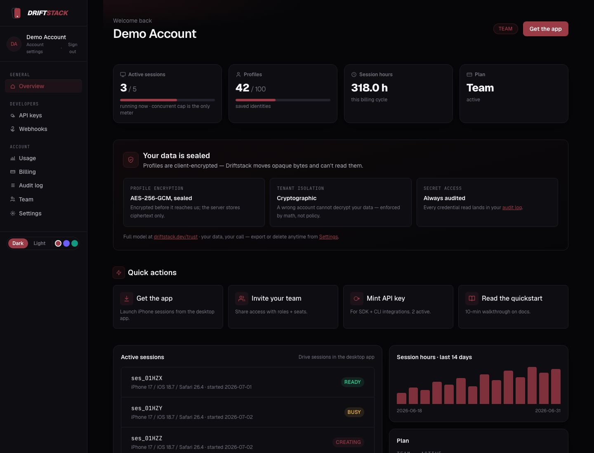
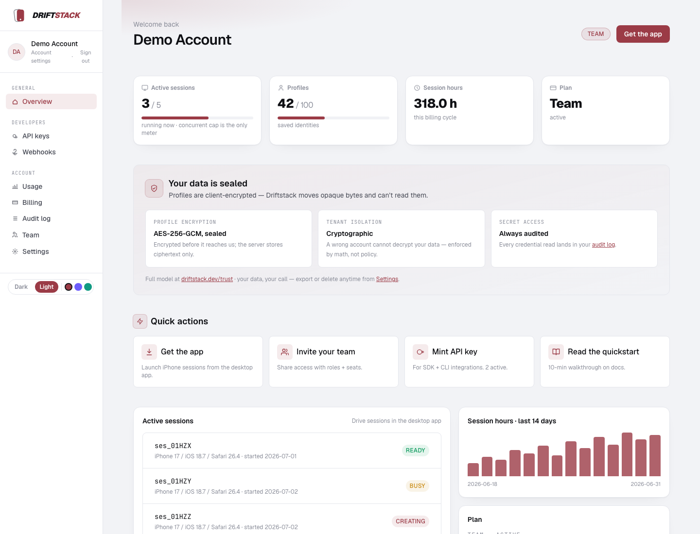
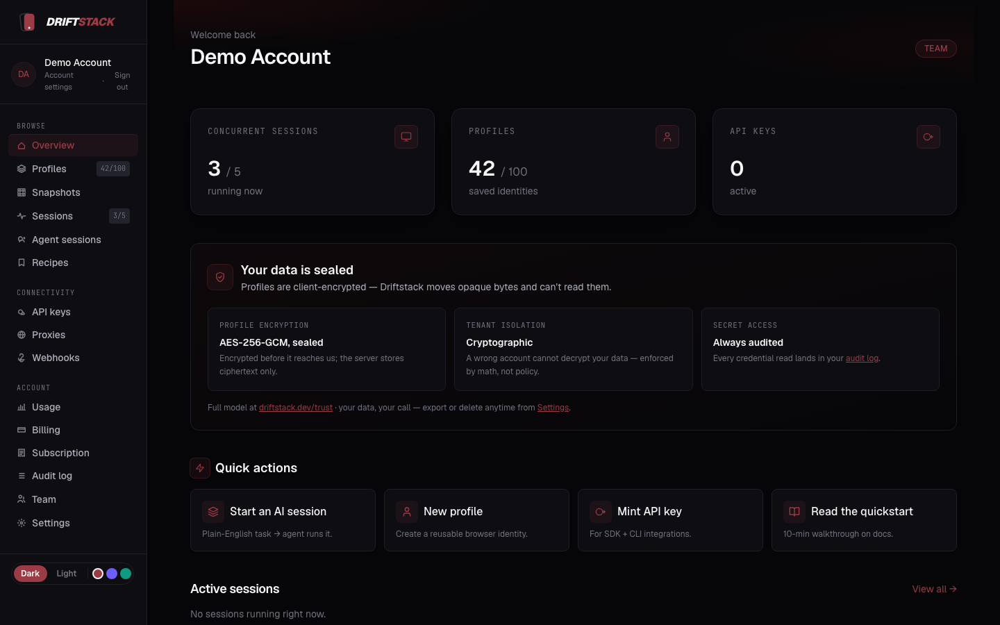
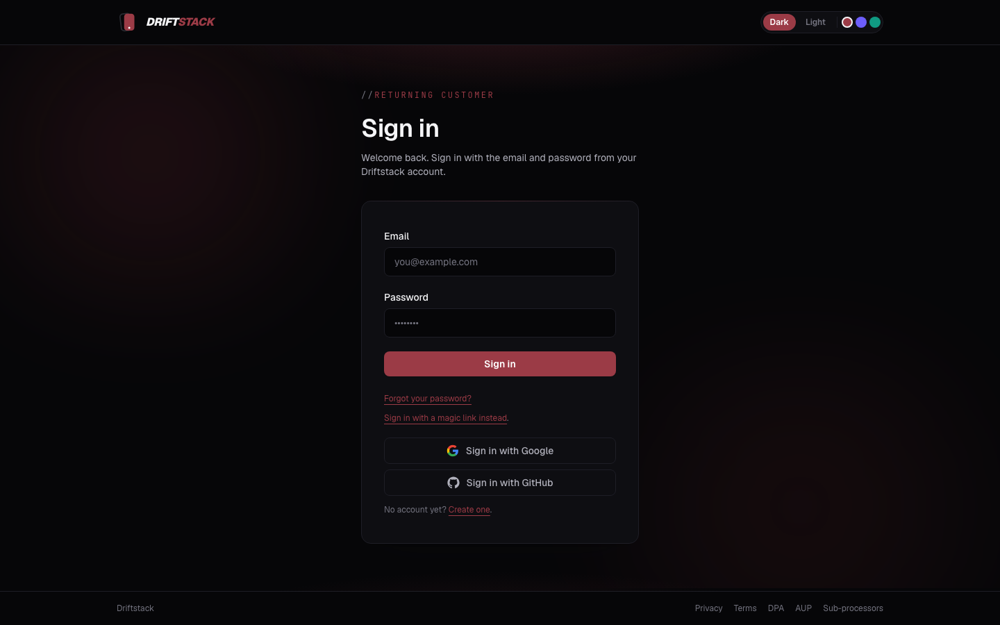
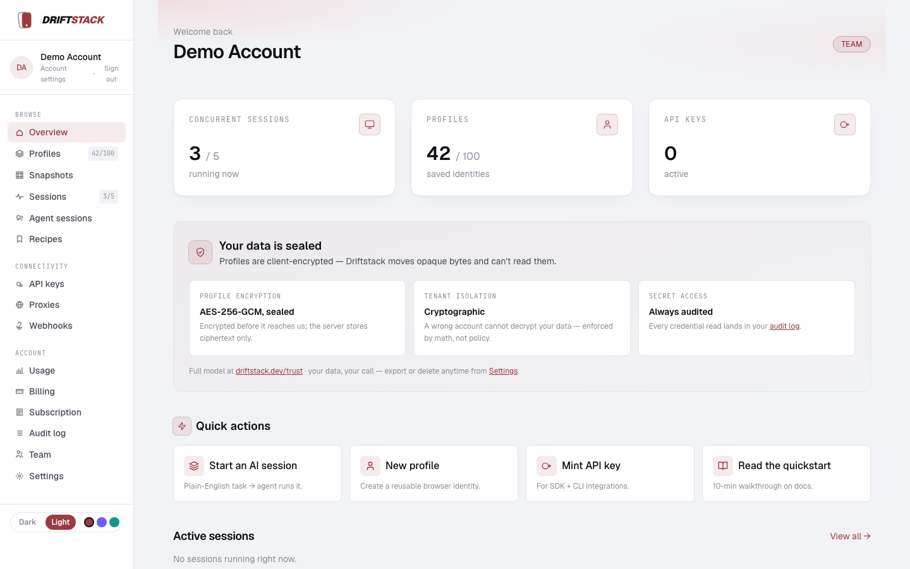
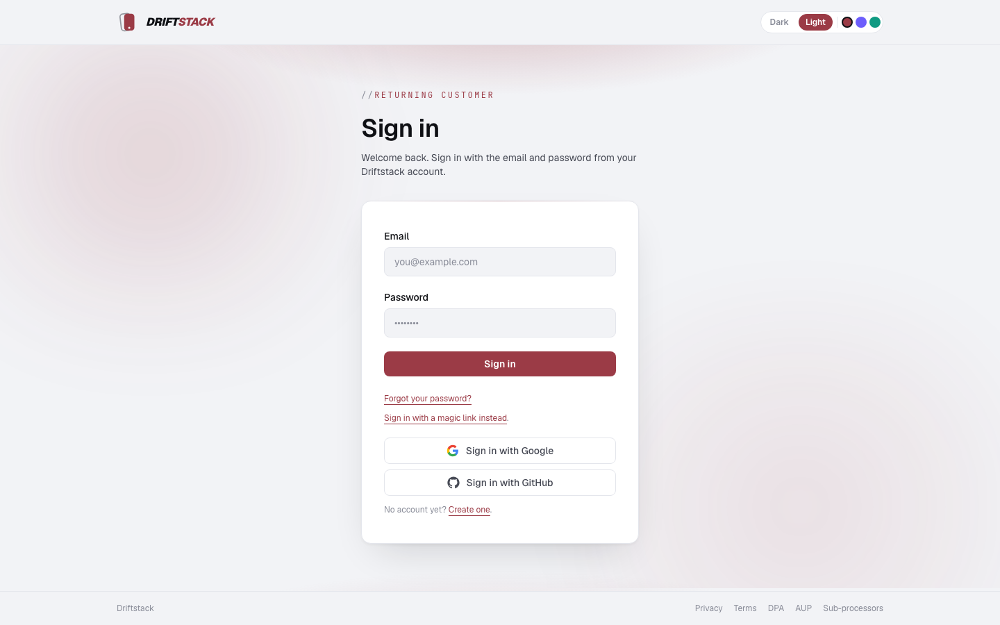
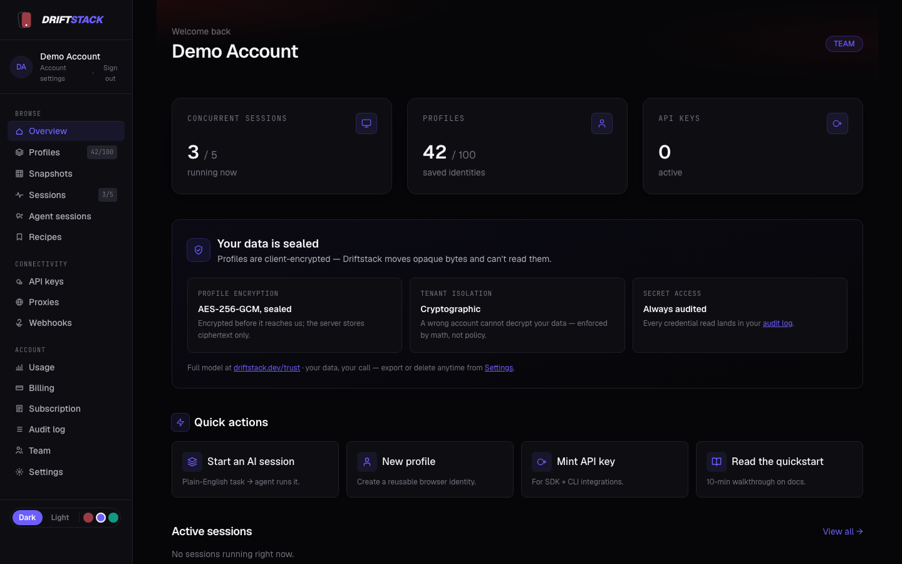
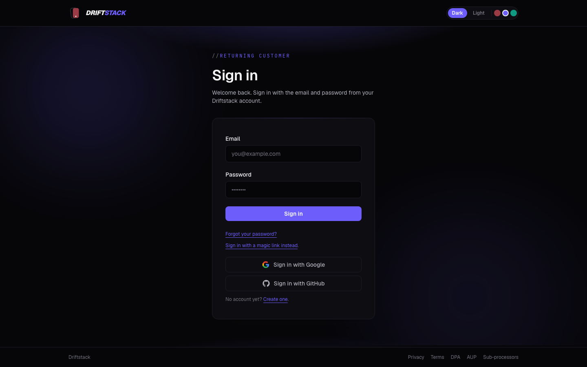
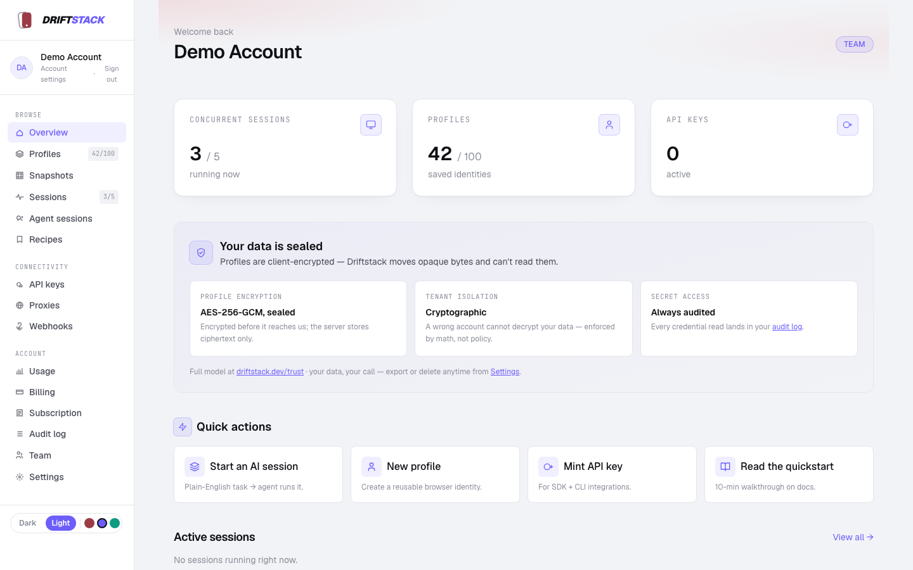
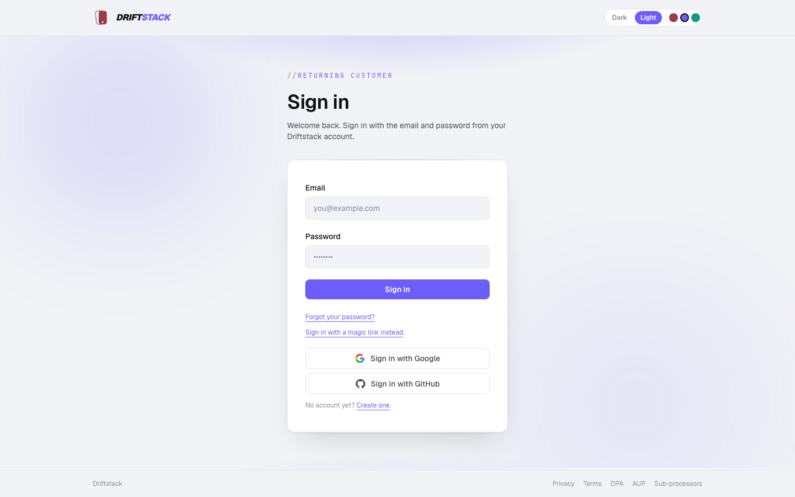
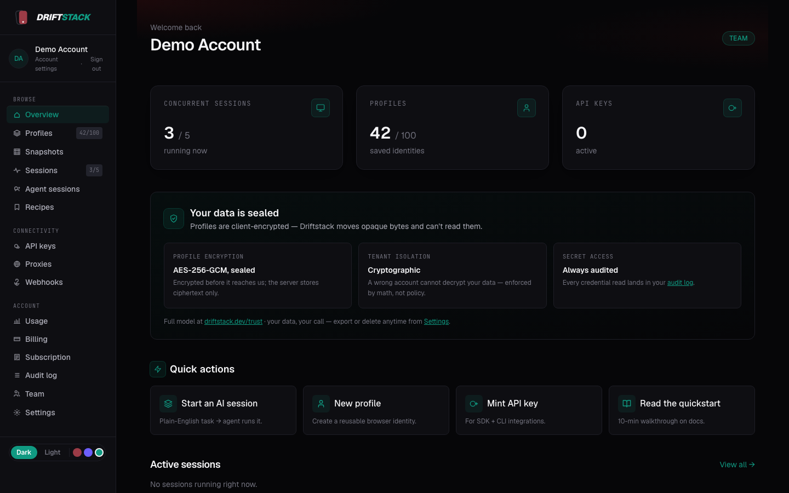
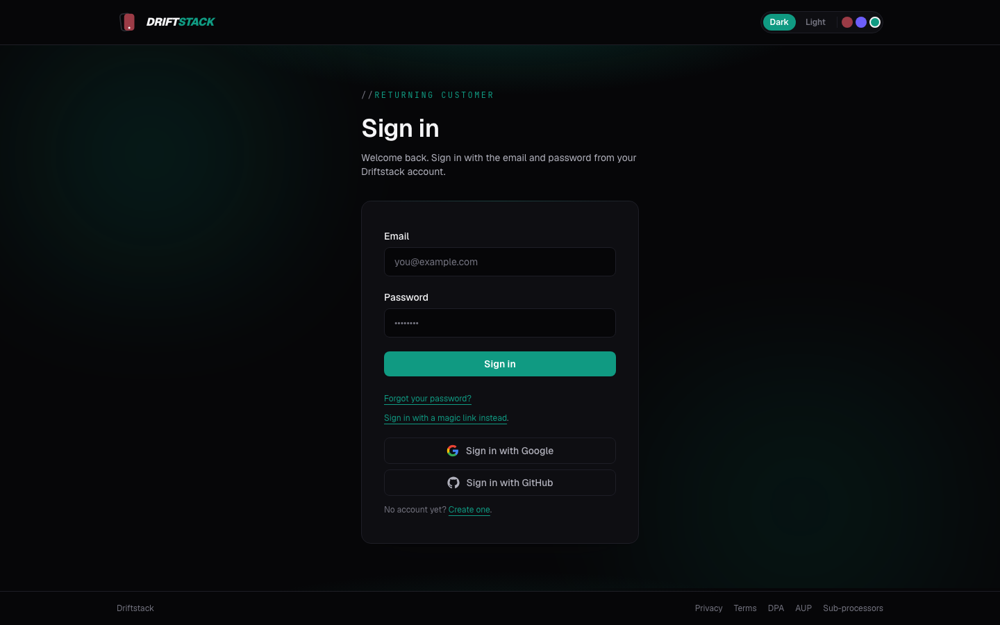
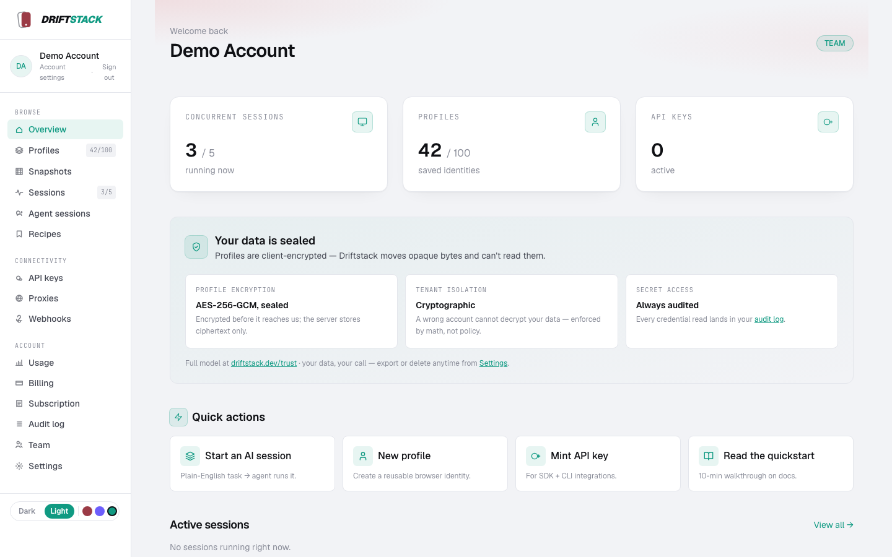
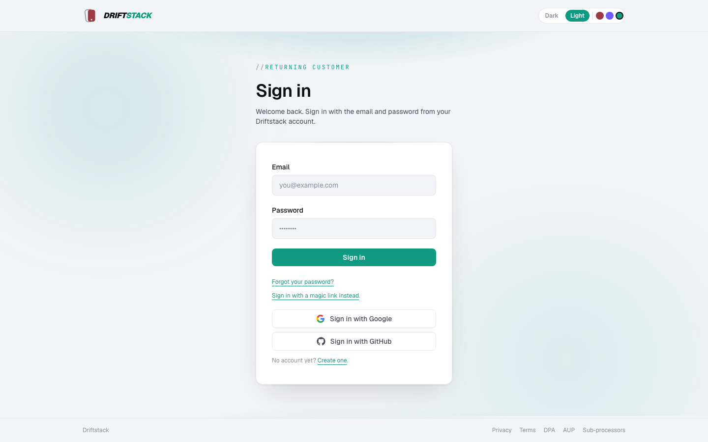